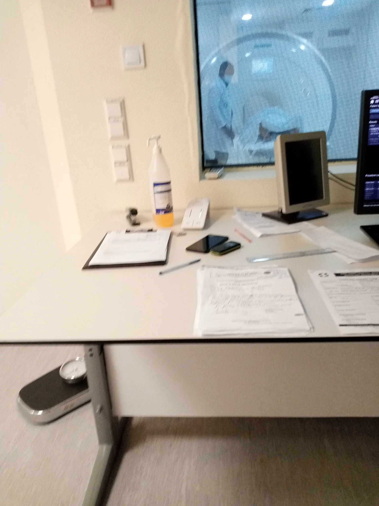

What people need to shape their future
A resident knows the path to the community hall is difficult to use after heavy rain. Someone else knows where the council keeps the plans. A volunteer has photographs from the last event. The people who use mobility aids know which slope or surface causes trouble. All of that knowledge exists. Bringing it together, finding who can authorise a repair and seeing the decision through can take more time than anyone has.
Luke Nathan Hayes’s plan starts with that gap. It asks what would change if people had the tools to investigate a problem, time to work on it, and a genuine say in what happened. It starts with an individual and a place. The ambition extends to shared infrastructure across Australia and a network of communities around the world.
The plan calls its aim Joyful Responsible Abundance. Joyful asks what makes life worth living, including friendship, play, time to rest and work people find worthwhile. Responsible asks who decides, who carries the cost and who can withhold consent. Abundance asks whether useful things such as food, knowledge, time, care and tools become more widely available. Together they give a community something concrete to ask about a proposal. Whose life improves, what are the consequences and who gets the means to act?
A Protopian Gambit is an opening move that makes a real improvement and leaves people with more choices for the next move. In the hall example, an accessible route for this weekend matters. It also matters whether the organisers can leave a clear record, get a lasting repair considered and help another group use what they learnt.
The four parts follow that progression. The first looks at how people carry what they learn through their own lives. The second asks who has time, money and access to the tools. The third shows how people check claims and put an issue before someone who can act. The fourth asks how those practices can shape more capable AI and sustain cooperation across borders. The project links throughout lead to the plans, tools and public work behind each step.
What an Aura helps you do
Imagine coming back to a project after six months. You find the photos and the half-finished file. It takes longer to remember why you stopped, who was helping and what you meant to try next. An Aura would bring those pieces together. You could ask it to find the last version, read back your reason for changing course and help you decide what to do now.
Aura of Intelligence is a proposed personal workspace. It brings records you choose to keep together with artificial intelligence, or AI, tools you decide to use. An AI tool can help search, summarise or draft a response. You could begin with one goal, a few notes and a relevant document. The project calls that first useful collection a minimum viable self. As you add to it, you build a personal digital twin, a working picture of aspects of your life you have chosen to record and use.
A wearable might estimate how long you slept. Your own account might explain you were awake waiting for news about someone you love. An AI tool might suggest an interpretation. Each has a different source. The qualified self means the person understood through their own account, values and circumstances. A memory palace organises selected records around places that mean something to them. A photo of a kitchen can lead you back to a recipe, a conversation and the person who taught you to cook it.
Control starts when you choose whether to record something. You then decide where it lives, which tool can use it and who may receive a copy. Using a record to answer one question and using it to train a model are separate choices. You can correct the record, take a usable copy to another service and withdraw future access. What a recipient can retain depends on the terms you agreed to when you shared it.
Aura Matrix Studio already lets people organise, edit and export reflections in a browser. Verse Box proposes a supported way to try that kind of work with someone there to help.
A first visit to Verse Box
A first visit might begin with a bundle of photographs, a half-written story or a question about something happening in your street. Someone at the station would help you choose a task and try it with example material. You could see what the equipment records, what an AI tool receives and what the result looks like before deciding whether to use your own information.
Verse Box is a proposed portable station for guided introductions to Aura. A community venue or event could host it. A facilitator would demonstrate the tools, help with accessibility and make sure people can finish with a copy of work they want to keep. The plan starts with suitable existing equipment where possible and includes help for visitors without a device. The host would show what happens to the material when a session closes.
The trial proposal follows a fictional resident who finds the route to a gathering difficult to use with a mobility aid. They describe where the route becomes difficult and compare a temporary arrangement with a lasting improvement. They choose a photograph and a question they are comfortable sharing through a civic workbench, a website where people can follow an issue through to a decision. The public case can show which organisation is responsible and what it decides. The resident’s own record can hold what they learnt and how they might help someone else make a request.
Someone could finish there with a useful result. They might return to work on a project, learn a skill or start building a personal record they can use elsewhere. They can decide how much support they want, what can be stored and whether any of it should be shared.
Verse Box is a trial proposal for Minjerribah and Redlands. A host, suitable equipment, session support and consent procedures would need to be agreed and tested. One measure of success is whether someone leaves with a result they recognise, control and can return to. Genesis explores what happens when a person chooses to continue learning with their Aura.
Growing a personal record through Genesis
Suppose you want to speak more confidently at a meeting. You recall a time when you held back, describe what made it difficult and choose one thing to try. You might prepare a question and ask it. Afterwards, you bring back what actually happened. You may have learnt that finding a place to speak mattered more than preparing the words. That gives the next conversation something specific to work on.
Aura Genesis is a longer process in which a person and their Aura learn to work together. The participant chooses the area of life to explore. The record distinguishes what they remember, what someone observed, what an AI suggested and what they decided to do. If an AI summary gets their reason wrong, they can correct it. They can also practise when they want the Aura to take the initiative, when it should offer a reminder and when it should ask permission.
The Aura Geode is one proposed adult research setting within Genesis. It brings together a chamber, breathing equipment, sensory experiences and guided reflection. Development Edition 3 describes sixty two-hour sessions of hyperbaric oxygen therapy, or HBOT, which involves breathing oxygen under increased pressure. That amounts to 120 proposed hours at pressure, recorded separately from the activities around the sessions and from teacher training. This strand requires its own participation agreements, clinical oversight and research. A person can begin ordinary Aura use through a practical task or conversation.
A research strand called the Truth Engine would compare selected responses with observations made under known conditions. A different response might reflect a clearer understanding or a change of meaning. The participant can explain what happened from their point of view. Researchers would keep track of what they measured, how they interpreted it and where uncertainty remains. Checking a public claim calls for a separate evidence trail that others can inspect.
The learning process carries into ordinary life. You try something, examine what happened, correct the account if it needs it and decide what to do next. A longer record can help you see whether you are developing the ability you wanted, on terms you recognise.
Learning a skill well enough to pass it on
A group in an escape room is trying to fit several clues together. One person spots a detail everyone else has missed, but their explanation gets lost as others talk. Afterwards, the group can revisit that moment and ask what would have helped the observation be heard. A different room gives them a chance to try a better approach under unfamiliar conditions.
The proposed Escape Room Network would offer distinctive local rooms and give visitors a reason to return or travel between venues. People can enjoy a room for its own sake. The public plan explains recording before play and offers a clear way to opt out. The game runs without hints, with reflection afterwards. A family, school group or work team can practise asking a clear question, checking an assumption or repairing a disagreement. Each participant decides what learning they want to carry into their own Aura.
The same approach applies to practical work. Just-in-time learning gives someone the explanation when they need to perform the task. A learner might watch a short demonstration beside a piece of equipment, practise with a supervisor and record the check that showed they had done it correctly. If an error exposed a missing instruction, the next person can learn from the correction. An installation project can build that material from real work as it happens.
Aura Teacher Training develops the approach through a proposed sixty-day course. On day nine, a learner traces a claim to its sources and keeps a visible correction. On day fifteen, they compare explanations before making a decision. Later, they teach an adult peer, see what that person can do with the explanation and revise the lesson. The closing plan asks what they want to keep learning and what responsibilities they are ready to take on.
The measure is whether someone can use a skill elsewhere and help someone else learn it. Keeping useful context matters when the learner moves on to a different workplace, school or stage of life.
Carrying your life through care and travel
Mia, a fictional Brisbane visitor, plans a day on Minjerribah with time around the ferry. During the walk she takes a photograph. Afterwards she says she felt better when she stopped trying to fit everything in. Her Aura could keep the photograph, her account and any movement estimate she wanted to include. The operator confirms the ferry time. Mia explains what made the day worthwhile. Both help her plan the next trip.
The tourism and domestic travel project shows how a group could share a timetable while keeping personal reflections separate. A cultural host can decide what visitors are welcome to record or take away. A person can organise selected memories around a track, kitchen or music venue and keep enough context to remember why each mattered.
The same continuity matters when life changes. Someone moving into care could preserve a view or object and the story that goes with it. They could make a short introduction to how they prefer to communicate, what they enjoy and whom they trust to help. A new carer can ask better questions with that information in hand. The person can revise the record as their preferences change. That is the aim of adaptive whole-of-life support for disability, younger-onset dementia and aged care. A clinical use, such as monitoring symptoms to inform treatment, requires its own evidence and oversight.
For children and young people in care, continuity might mean keeping a garden game or animation project through a change of school or placement. With a trusted adult, a young person can start with examples, decide what to add and take a chosen portfolio to a new mentor. They need understandable ways to correct something, pause or leave. Preparing for adulthood also needs housing, learning, paid work and people they can call.
These proposals show why a personal record needs to travel with the person. A storm or service failure poses a further question. Can they still reach what matters when a device, provider or connection is unavailable?

Staying connected when services fail
Before a storm, a household might agree who will check on an older relative, how they will get in touch if the internet drops out and where to find a current warning. An Aura could help people record and rehearse those arrangements. A shared station can make public information available to neighbours who have lost a device or have no suitable one.
The disaster resilience and recovery proposal imagines Anna trying this in a planned exercise. Outside internet access is lost at a sample location. Her phone and a local public kiosk still have a stored warning. The screen shows who issued it, when the copy was received, which area and action it refers to, and that the connection is down. Anna can judge how current it is. If an AI tool explains unfamiliar wording, the original warning stays available for her to check.
People may also need to ask for practical help. A tool could help someone write a request, decide which details are needed and choose how to be contacted. The next step belongs to a receiving organisation or person who has agreed to handle that type of request. A useful system shows whether it was received, who has it and what happens next. In recovery, a household can retain decisions, promises and questions through changes of staff and services.
A host needs people, equipment and enough reliable power for the essential services. Displaying a warning and running a large AI task have different power needs. The proposal calls for testing normal service, interrupted connections, staff handover and restoration in an exercise using sample people and notices. Hosts and operating arrangements would still need to be agreed.
The relationships develop through use in ordinary weeks. A familiar place to check information, learn a task or arrange help can serve people when circumstances change. That is one reason the wider plan treats shared computing and the people who operate it as part of community resilience.